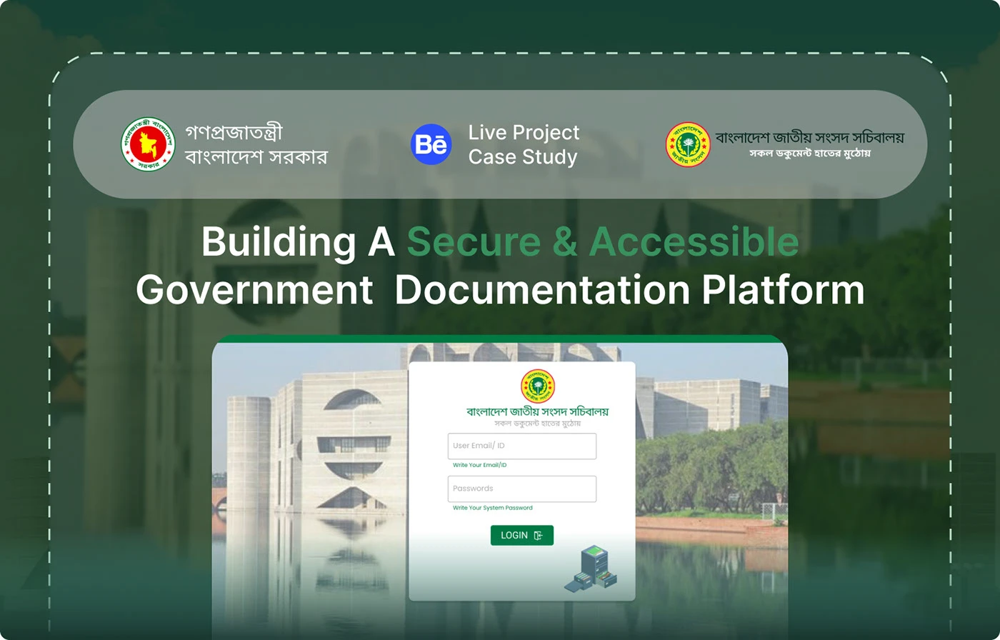
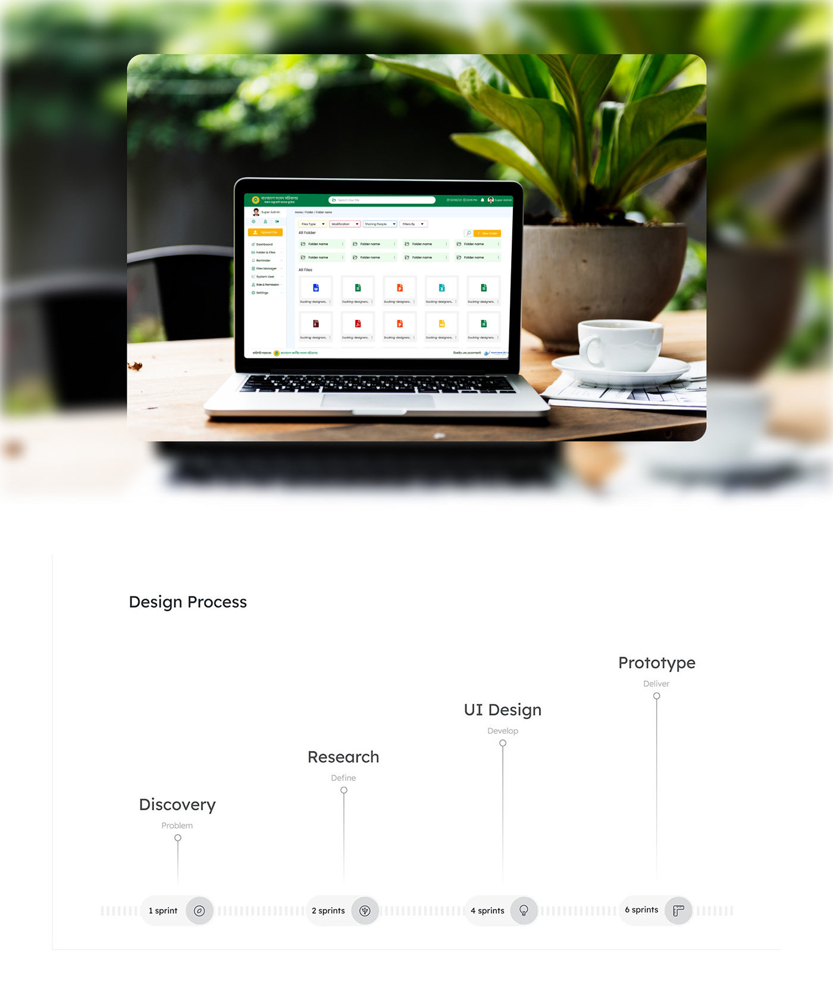
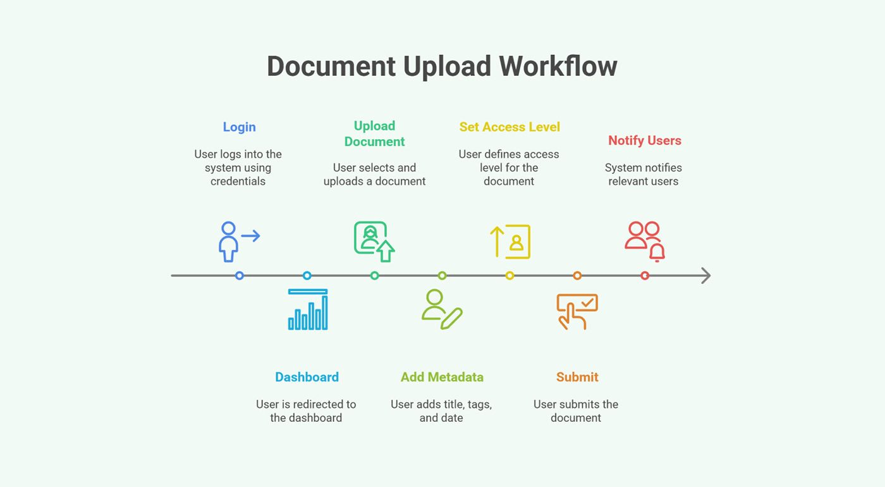
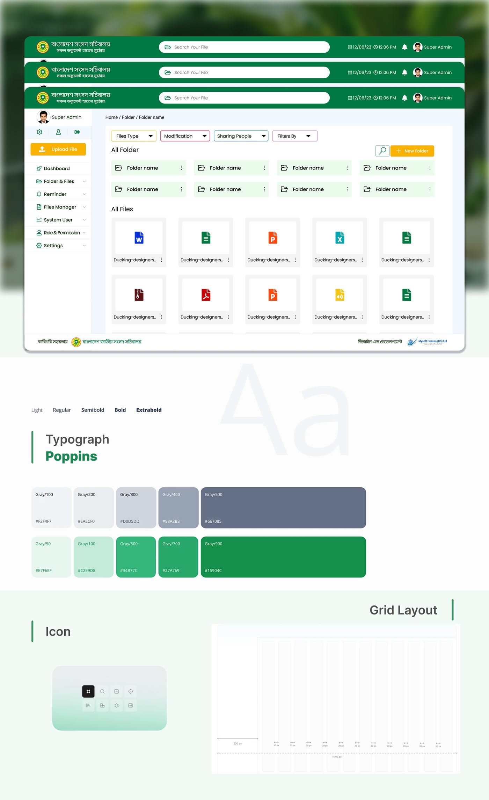
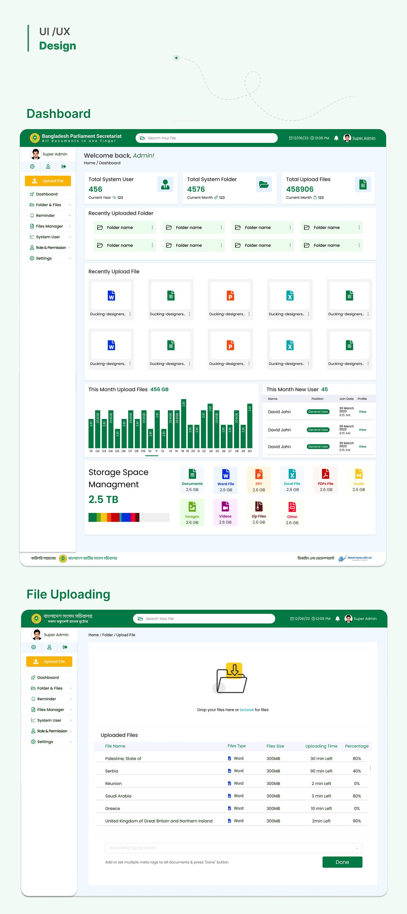
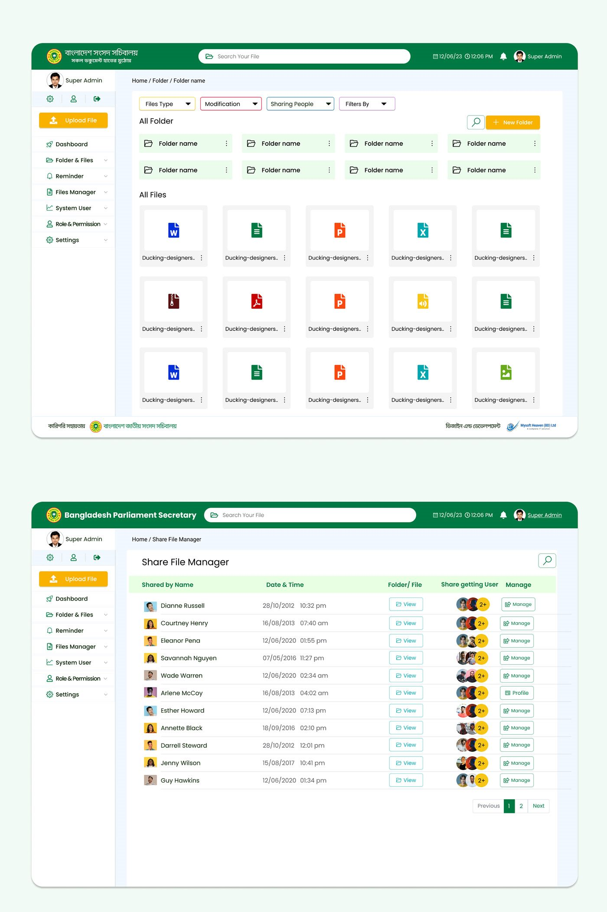
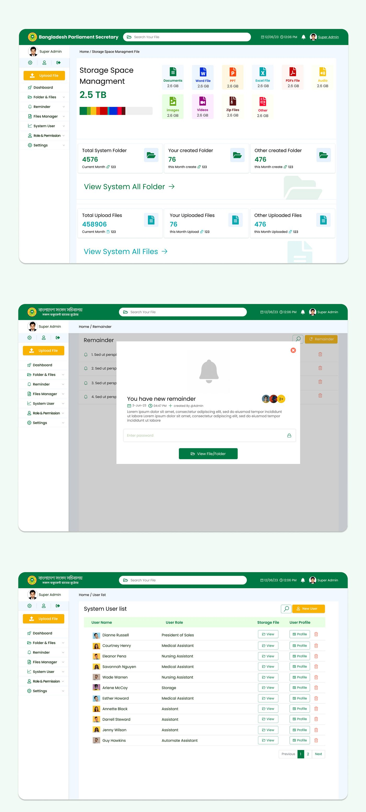
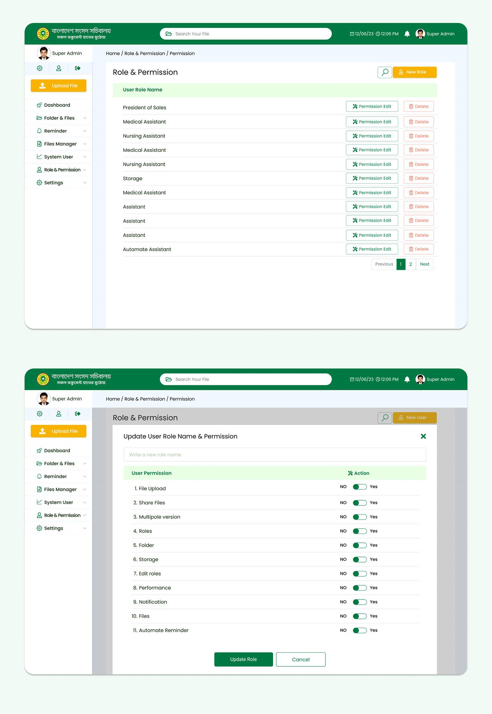

Government · Document management · Mysoft Heaven
Parliament Documentation System
One secure place for the Bangladesh Parliament Secretariat to upload, find and share legislative files — replacing shared drives and email threads.

- Role
- UI/UX Designer — research, UI design and prototype
- Duration
- 2023–2024
- Platform
- Internal web system, desktop and tablet
- Client
- Bangladesh Parliament Secretariat
- Tools
- Figma, Photoshop
01The problem
Parliament's internal documentation ran on manual workflows, unstructured file drives and scattered email threads.
Important documents were slow to retrieve. Files were duplicated or lost. And with no central archive, version history or permissions, sensitive legislative material was at real risk of reaching people who should not see it.
02What it had to do
- Centralise legislative files, motions and notes in one archive.
- Make retrieval fast, through search and filters rather than remembering which drive a file is on.
- Control access by role, so sensitive files are only open to the right people.
- Track every action with version history, for accountability.
- Stay simple enough for non-technical staff, on desktop and tablet.
03Process and workflow
The work ran in four phases, measured in sprints: discovery (1), research (2), UI design (4) and prototype (6).
The core flow is uploading a document, and it has seven steps: log in, land on the dashboard, upload, add metadata (title, tags, date), set the access level, submit, and the system notifies the relevant users. Access level is a step in the upload itself, not a setting to remember afterwards.


What's in it
-
Dashboard
Total users, folders and files, recent uploads, this month's upload volume, new users, and storage used by file type.
-
Upload
Drag and drop, with per-file progress, and meta tags added to the whole batch so the files can be found later.
-
Folders & files
Folders above files, filtered by file type, modification date and who a file is shared with. Search is in the top bar on every screen.
-
Share file manager
Every share in one table: who shared it, when, with whom, and a Manage button to change it.
-
Reminders
A reminder attached to a file or folder. Opening the file from the reminder asks for a password first.
-
Users, roles & permissions
A user list with roles, and a permission screen where each role gets eleven yes/no switches — upload, share, versions, folders, storage and more.
04Two things worth pointing at
Permissions are switches, not a matrix. Editing a role opens a plain list of eleven permissions, each with a yes/no toggle. An administrator who is not technical can read exactly what a role can do, and change it, without training.
Storage is shown by file type. Documents, Word, Excel, PDF, audio, images, video and archives each show their share of the total. When space runs low, the admin can see what is using it.
05The system
Poppins in five weights, on a 12-column grid at 1440px with a fixed
220px sidebar. The palette is a grey scale plus a green scale built up
to #15904C, with a single amber reserved for the main
action on each screen — Upload File, New Folder, New User.





06Credit
UX and UI for the Bangladesh Parliament Secretariat, with Mysoft Heaven as design and development partner. Published on Behance.
Land Service Gateway
Eight land services behind one login, redesigned around clearer data.
Say hello
Happy to walk through this project, or any of the others, on a call.